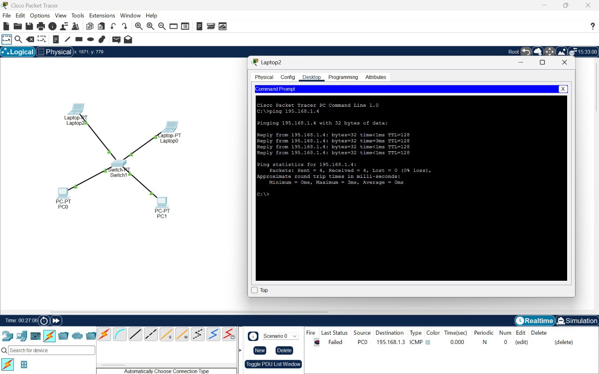
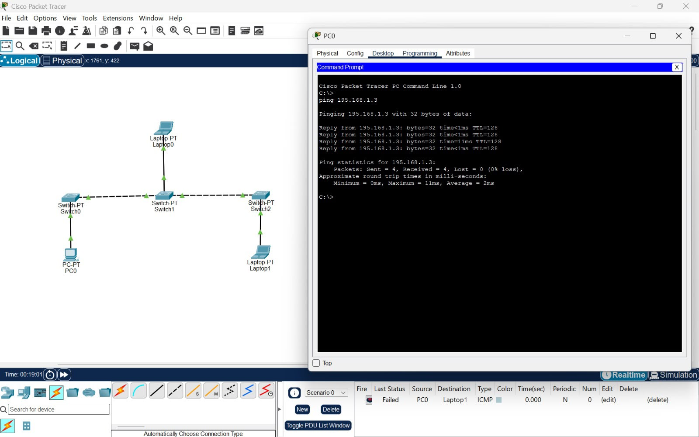
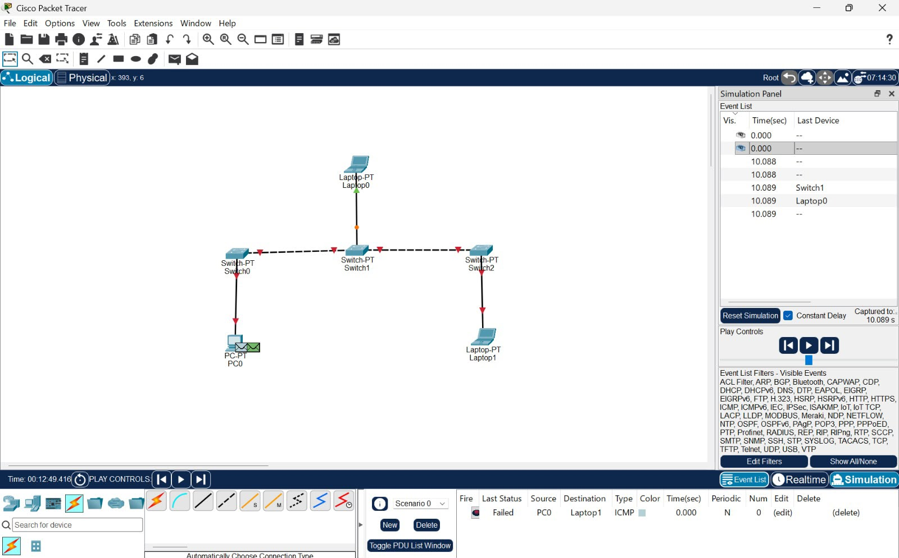
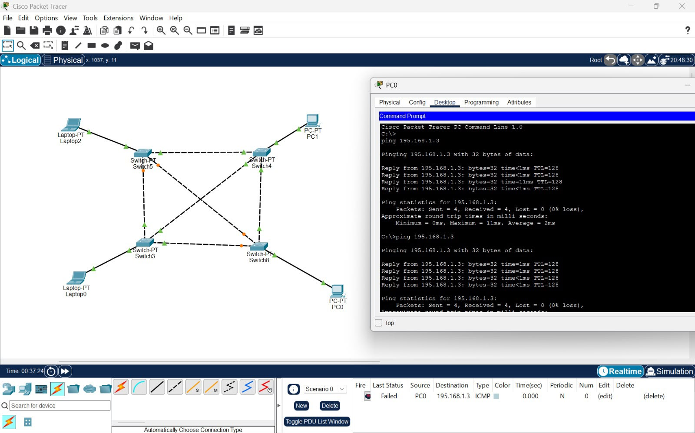
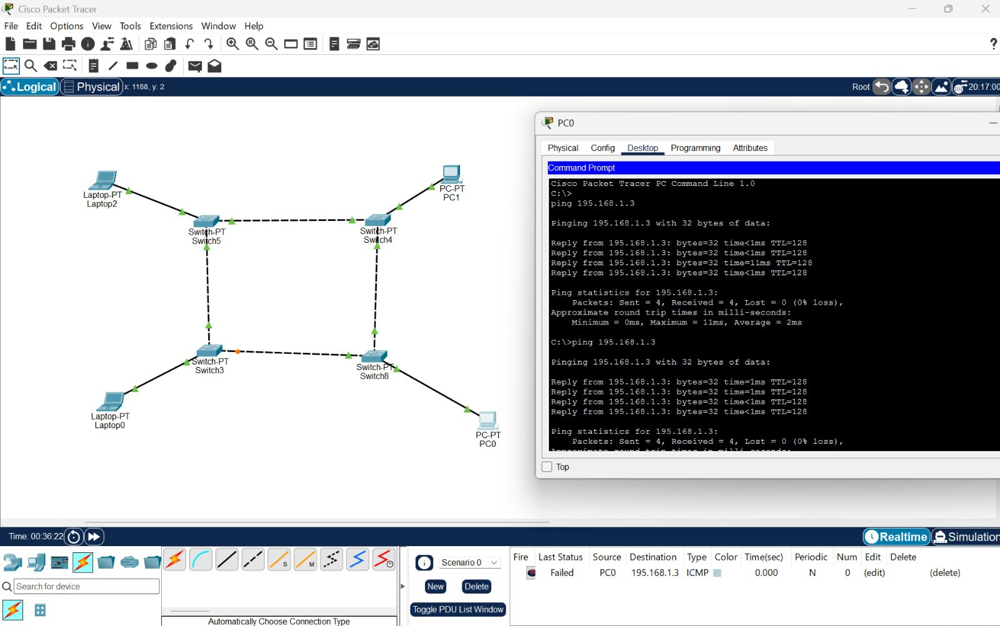
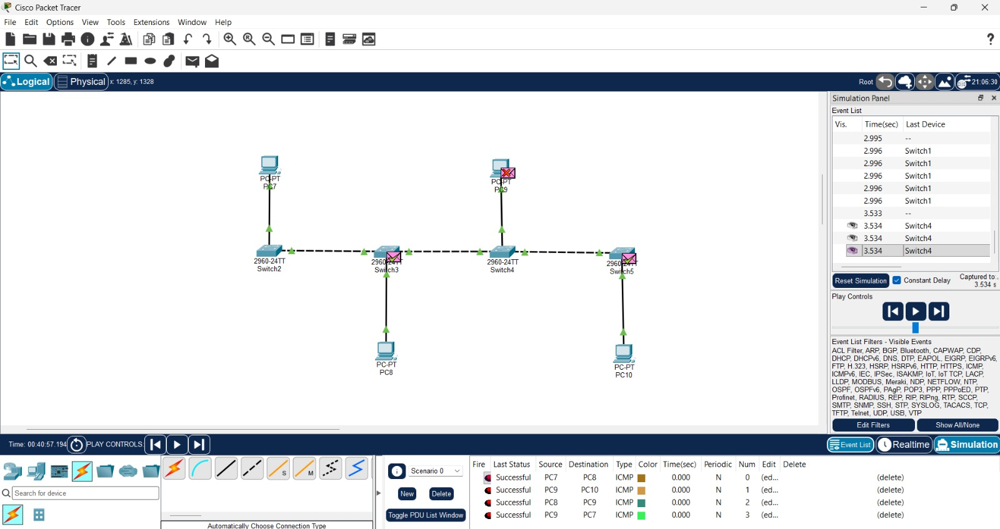
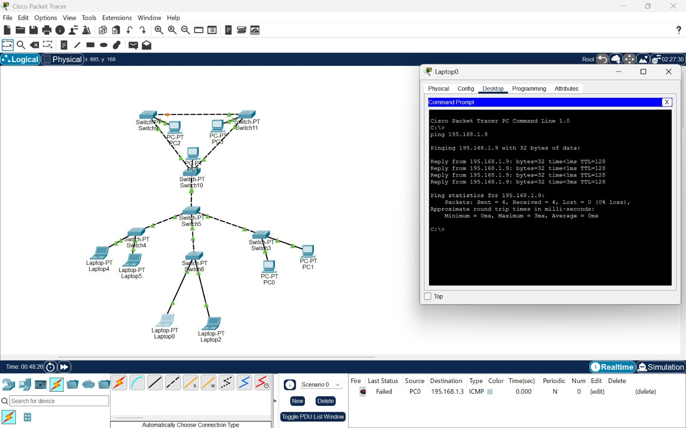
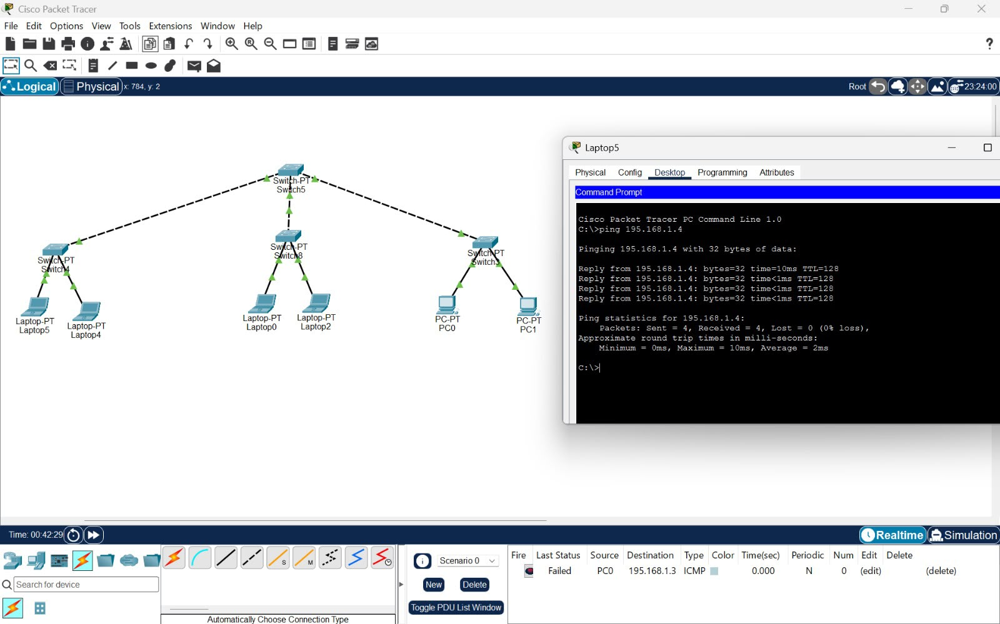
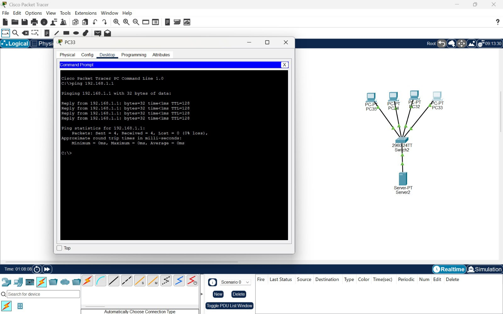
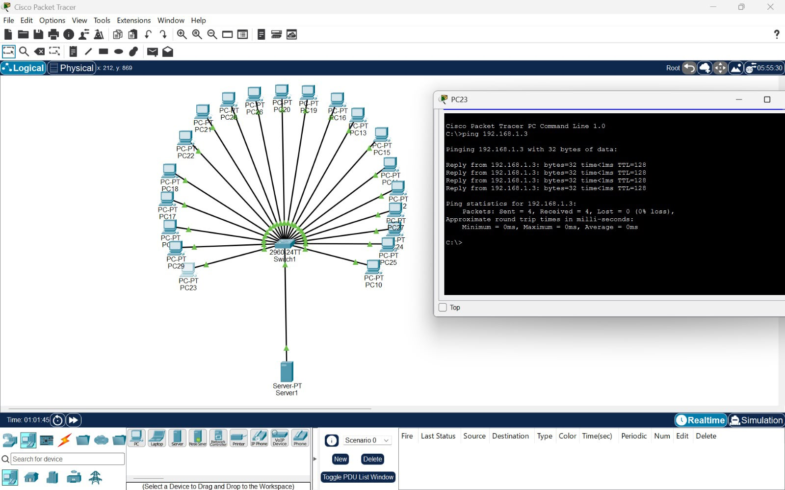
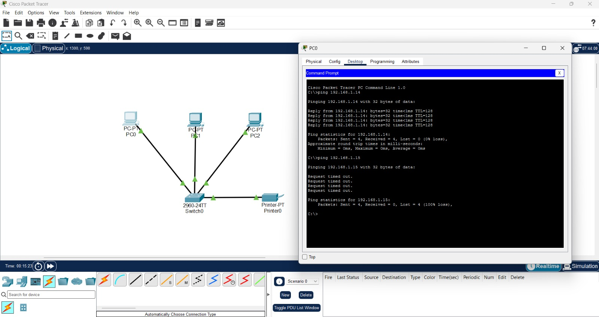
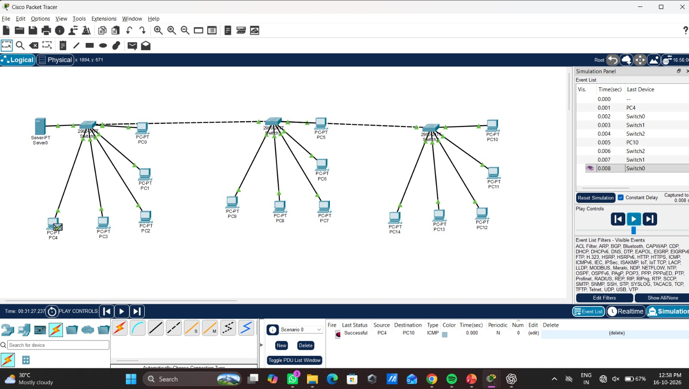
All Packet Tracer topology screenshots, grouped by experiment number and title. Click any image to open the full-resolution screenshot in a new tab. The C-program outputs for Experiments 32, 34 and 35 are not topologies and are excluded from this gallery.











